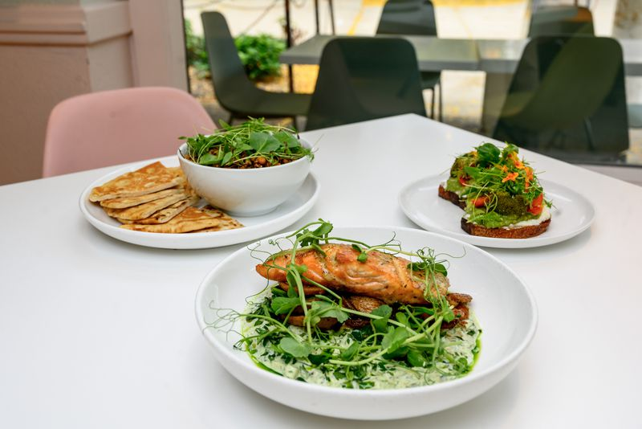
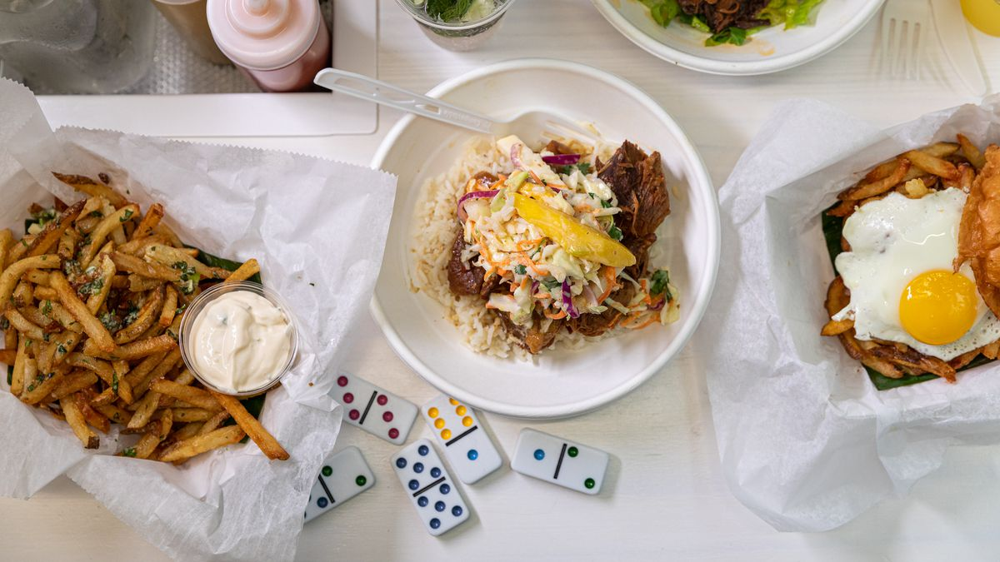
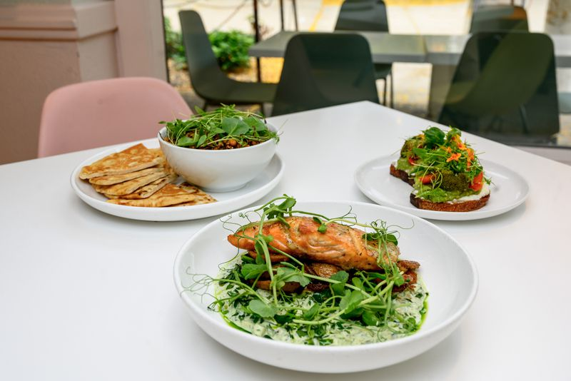
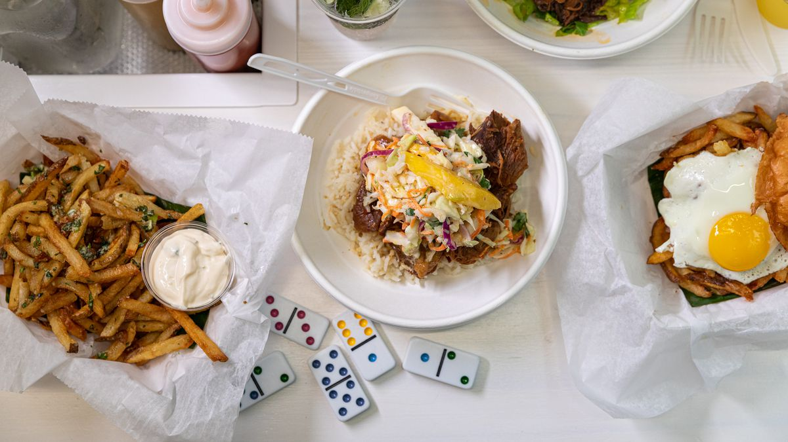
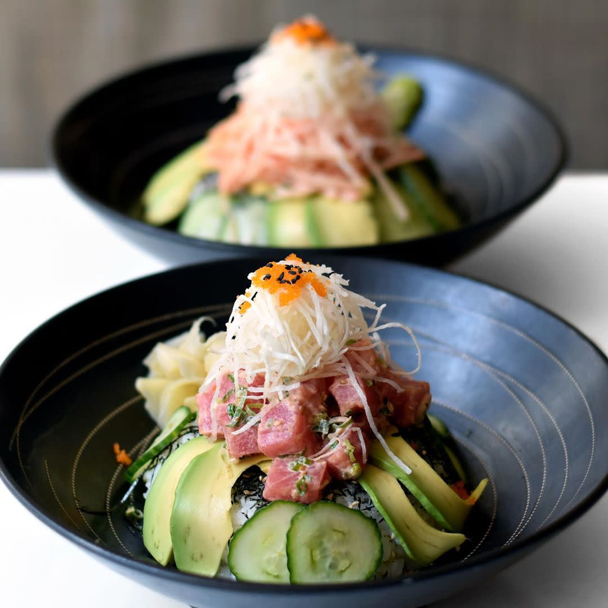
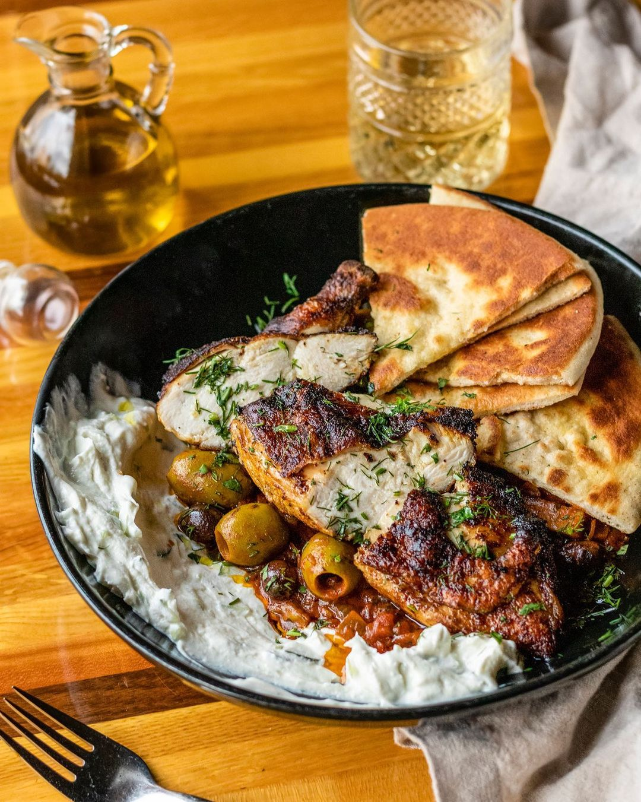
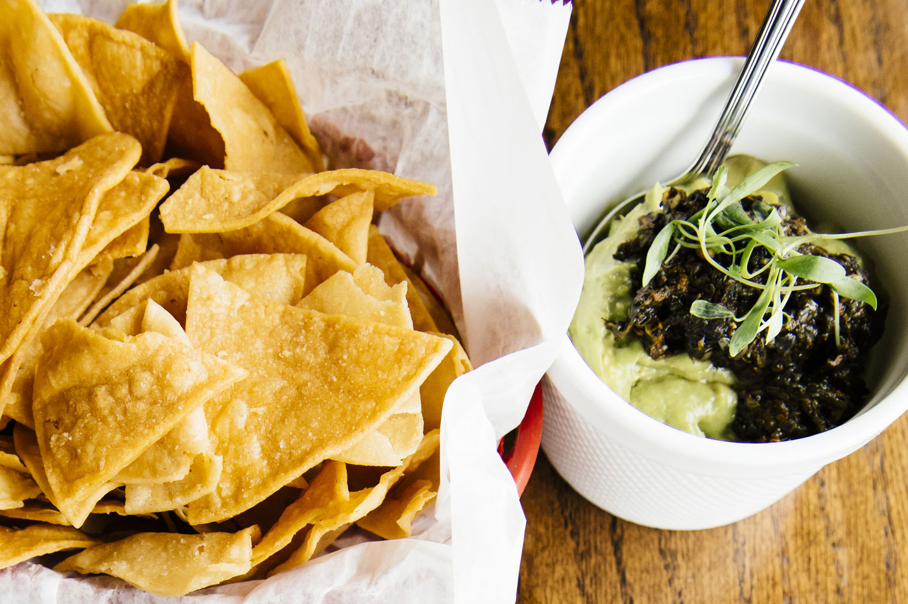
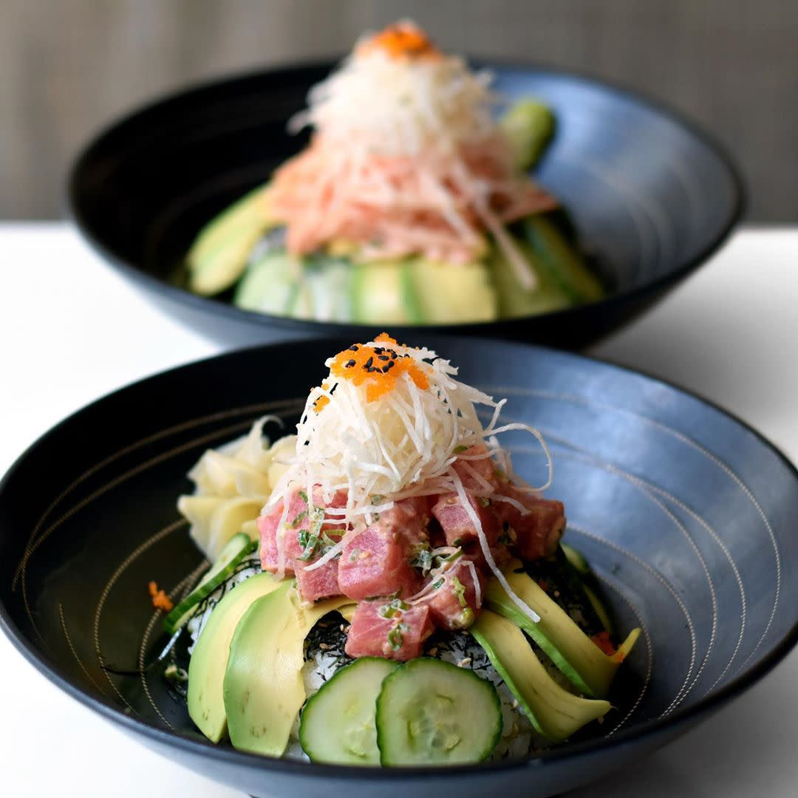
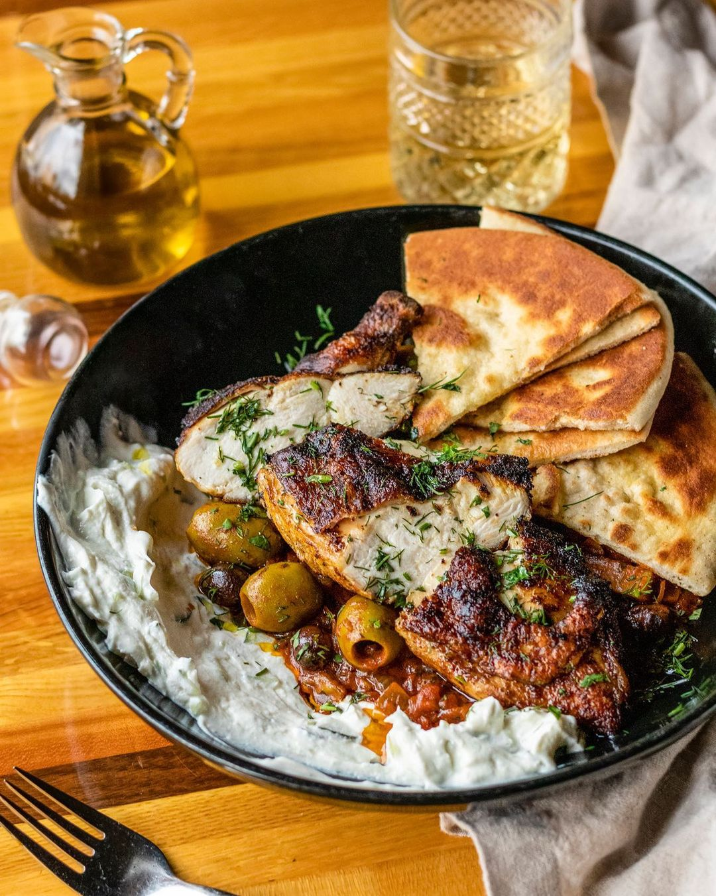
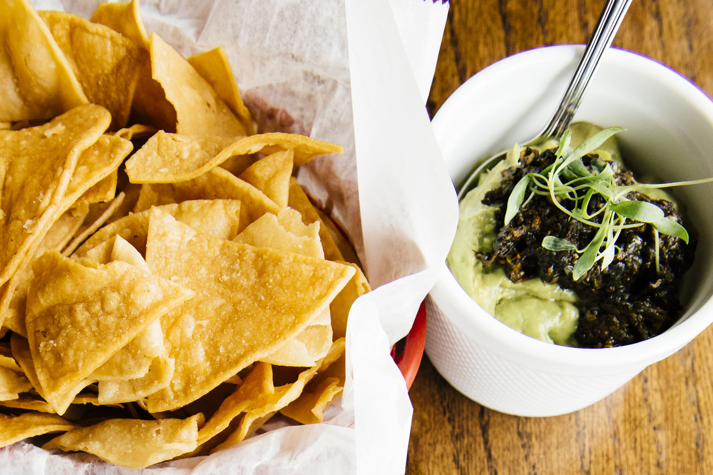

Even after three years of sorting through restaurants in Ann Arbor, I still haven't been able to try them all!
However, I have tried enough to be able to curate a list with all of my favorites that I have tried so far.

 



 




